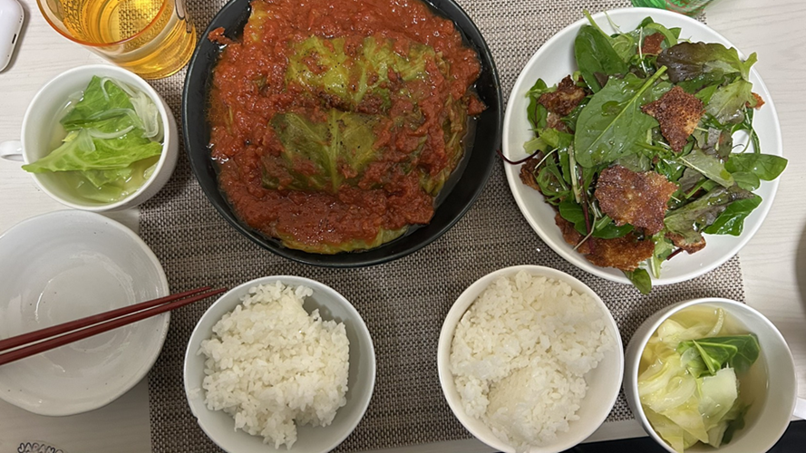

<!DOCTYPE html>
<html lang="ja">

</html>

<head>
    <article>
        <ol>
            <li><a href="index.html">トップ</a> &nbsp;&gt;</li>
            <li>自炊日記</li>
        </ol>
    </article>
    <meta charset="UTF-8">
    <title>山本の自炊日記：自炊日記</title>
    <link rel="stylesheet" href="css/mystyle.css">
</head>

<body>
    <header>
        
        <h1 class="sub-h1">山本の自炊日記 </h1>
        
        <p class="food"></p>
        <ul class="point-list">
            <li>ロールキャベツ</li>
        </ul>
        </p>
        <li>☆材料（４人前）☆</li>
        <li>キャベツ（８枚）</li>
        <li>カットトマト缶（1缶）</li>
        <li>パセリ（適量）</li>
        <li>A.肉だね</li>
        <li>合いびき肉400g</li>
        <li>玉ねぎ（1/2個）</li>
        <li>パン粉（大さじ６）</li>
        <li>牛乳（大さじ６）</li>
        <li>塩（小さじ1/2）</li>
        <li>こしょう（少々）</li>
        <li>B.調味料</li>
        <li>水（200㏄）</li>
        <li>砂糖（小さじ１）</li>
        <li>塩（小さじ2/3）</li>
        <li>こしょう（少々）</li>
        <li>コンソメ（小さじ１※キューブタイプだと1/2）</li>
        <li>ケチャップ（大さじ４）</li>
        <li class="make">☆作り方☆</li>
        <li>キャベツを水にくぐらせ、耐熱容器に入れる。ふんわりとラップをし600wのレンジで30～40秒加熱し、粗熱を取る。</li>
        <li>キャベツの芯と玉ねぎはみじん切りにする。</li>
        <li>ボウルにパン粉、牛乳を入れてしみ込ませる。残りのA、キャベツの芯を加え、粘り気が出るまで混ぜる。肉だねを8等分に分け俵型に整える。</li>
        <li>キャベツを1枚広げ、肉だねの1/4の量を手前にのせる。手前から巻き、左右を中心に向かって畳む。手前から巻き、包み終わりつをつま楊枝で止める。</li>
        <li>鍋にロールキャベツ、B、カットトマト缶を入れ、軽く混ぜて蓋をする。中火で熱し、煮だったら時々煮汁をかけながら弱火で18~20分煮る。</li>

    </header>
    <footer>
        <small>© 2027 mamorecipi cooking.</small>
        <br><small>This site uses <a href=”http://www.htmllint.net/html-lint/htmllint.html#” target="_blank">
                Another HTML-Lint5 Markup Validation Service</a>
            and <a href=”http://jigsaw.w3.org/css-validator/#validate_by_upload” target="_blank"> W3C CSS
                Markup Validation Service</a>.</small>
    </footer>
</body>